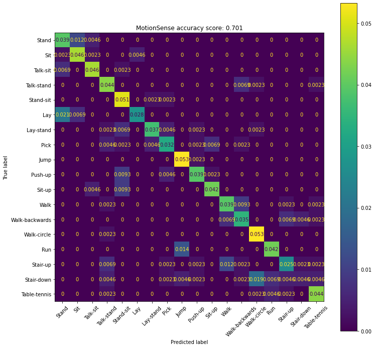
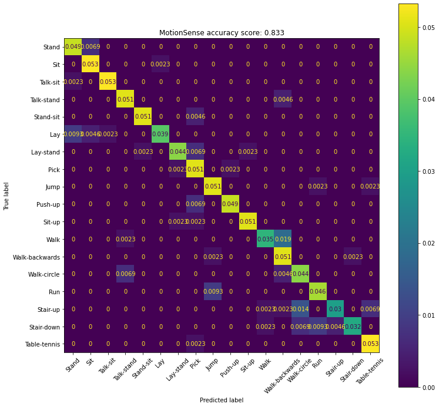

[1]:
%load_ext autoreload
%autoreload 2
import sys
sys.path.append("..")
[2]:
from pathlib import Path
from typing import List
import matplotlib.pyplot as plt
import numpy as np
import pandas as pd
from sklearn.ensemble import RandomForestClassifier
from sklearn.metrics import (
classification_report,
confusion_matrix,
ConfusionMatrixDisplay,
accuracy_score
)
from librep.datasets.kuhar import (
RawKuHar,
RawKuHarIterator,
KuHarDatasetGenerator,
KuHarDataset,
)
from librep.utils.dataset import load_full_data
%matplotlib inline
[4]:
dataset_dir = Path("../data/datasets/KuHar/1.Raw_time_domain_data")
kuhar_dataset = RawKuHar(dataset_dir, download=False)
kuhar_dataset
[4]:
KuHar Dataset at: '../data/datasets/KuHar/1.Raw_time_domain_data'
[5]:
act_names = [kuhar_dataset.activity_names[i] for i in range(18)]
act_names
[5]:
['Stand',
'Sit',
'Talk-sit',
'Talk-stand',
'Stand-sit',
'Lay',
'Lay-stand',
'Pick',
'Jump',
'Push-up',
'Sit-up',
'Walk',
'Walk-backwards',
'Walk-circle',
'Run',
'Stair-up',
'Stair-down',
'Table-tennis']
[6]:
iterator = RawKuHarIterator(kuhar_dataset)
iterator
[6]:
Kuhar Iterator: users=89, activities=18
[6]:
kuhar_v1 = KuHarDatasetGenerator(iterator, time_window=300, window_overlap=0)
kuhar_v1
[6]:
Dataset generator: time_window=300, overlap=0, labels=class
[7]:
train, validation, test = kuhar_v1.create_datasets(
train_size=0.7,
validation_size=0.1,
test_size=0.2,
ensure_distinct_users_per_dataset=True,
balance_samples=True,
seed=0
)
Generating full df over KuHar View: 1945it [01:33, 20.72it/s]
Time
[8]:
train_dataset = KuHarDataset(train, sensors=["accel-x", "accel-y", "accel-z", "gyro-x", "gyro-y", "gyro-z"], label_columns="class")
validation_dataset = KuHarDataset(validation, sensors=["accel-x", "accel-y", "accel-z", "gyro-x", "gyro-y", "gyro-z"], label_columns="class")
test_dataset = KuHarDataset(test, sensors=["accel-x", "accel-y", "accel-z", "gyro-x", "gyro-y", "gyro-z"], label_columns="class")
[9]:
train_x, train_y = load_full_data(train_dataset, return_X_y=True)
validation_x, validation_y = load_full_data(validation_dataset, return_X_y=True)
test_x, test_y = load_full_data(test_dataset, return_X_y=True)
[10]:
train_val_x = np.concatenate([train_x, validation_x])
train_val_y = np.concatenate([train_y, validation_y])
train_val_x.shape, train_val_y.shape
[10]:
((3402, 1800), (3402,))
[11]:
model = RandomForestClassifier()
model.fit(train_val_x, train_val_y)
[11]:
RandomForestClassifier()
[12]:
test_x.shape, test_y.shape
[12]:
((432, 1800), (432,))
[13]:
y_pred = model.predict(test_x)
[14]:
print(classification_report(test_y, y_pred, target_names=act_names))
precision recall f1-score support
Stand 0.57 0.71 0.63 24
Sit 0.71 0.83 0.77 24
Talk-sit 0.80 0.83 0.82 24
Talk-stand 0.63 0.79 0.70 24
Stand-sit 0.63 0.92 0.75 24
Lay 0.86 0.50 0.63 24
Lay-stand 0.84 0.67 0.74 24
Pick 0.67 0.58 0.62 24
Jump 0.74 0.96 0.84 24
Push-up 0.77 0.71 0.74 24
Sit-up 0.82 0.75 0.78 24
Walk 0.68 0.71 0.69 24
Walk-backwards 0.60 0.62 0.61 24
Walk-circle 0.68 0.96 0.79 24
Run 0.78 0.75 0.77 24
Stair-up 0.61 0.46 0.52 24
Stair-down 0.40 0.08 0.14 24
Table-tennis 0.76 0.79 0.78 24
accuracy 0.70 432
macro avg 0.70 0.70 0.68 432
weighted avg 0.70 0.70 0.68 432
[15]:
acc = accuracy_score(test_y, y_pred)
fig, ax = plt.subplots(figsize=(12, 12))
ax.set_title(f"MotionSense accuracy score: {acc:.3f}")
ConfusionMatrixDisplay.from_predictions(
test_y,
y_pred,
display_labels=act_names,
normalize="all",
ax=ax,
xticks_rotation=45
)
plt.show()

FFT
[16]:
from librep.utils.dataset import MultiFeatureDataset
from librep.transforms.fft import FFT
from functools import partial
features = [
"accel-x",
"accel-y",
"accel-z",
"gyro-x",
"gyro-y",
"gyro-z"
]
fft_transform = FFT()
collate_fn = np.concatenate
fft_train_dataset = MultiFeatureDataset(
train,
features_columns=features,
label_columns="class",
per_sample_transform=fft_transform,
collate_fn=collate_fn
)
fft_validation_dataset = MultiFeatureDataset(
validation,
features_columns=features,
label_columns="class",
per_sample_transform=fft_transform,
collate_fn=collate_fn
)
fft_test_dataset = MultiFeatureDataset(
test,
features_columns=features,
label_columns="class",
per_sample_transform=fft_transform,
collate_fn=collate_fn
)
[17]:
fft_train_x, fft_train_y = load_full_data(fft_train_dataset, return_X_y=True)
fft_validation_x, fft_validation_y = load_full_data(fft_validation_dataset, return_X_y=True)
fft_test_x, fft_test_y = load_full_data(fft_test_dataset, return_X_y=True)
[18]:
fft_train_val_x = np.concatenate([fft_train_x, fft_validation_x])
fft_train_val_y = np.concatenate([fft_train_y, fft_validation_y])
fft_train_val_x.shape, fft_train_val_y.shape
[18]:
((3402, 1800), (3402,))
[19]:
model = RandomForestClassifier()
model.fit(fft_train_val_x, fft_train_val_y)
[19]:
RandomForestClassifier()
[20]:
fft_test_x.shape, fft_test_y.shape
[20]:
((432, 1800), (432,))
[21]:
fft_y_pred = model.predict(fft_test_x)
[22]:
print(classification_report(fft_test_y, fft_y_pred, target_names=act_names))
precision recall f1-score support
Stand 0.81 0.88 0.84 24
Sit 0.82 0.96 0.88 24
Talk-sit 0.96 0.96 0.96 24
Talk-stand 0.85 0.92 0.88 24
Stand-sit 0.96 0.92 0.94 24
Lay 0.94 0.71 0.81 24
Lay-stand 0.90 0.79 0.84 24
Pick 0.69 0.92 0.79 24
Jump 0.81 0.92 0.86 24
Push-up 0.95 0.88 0.91 24
Sit-up 0.96 0.92 0.94 24
Walk 0.88 0.62 0.73 24
Walk-backwards 0.63 0.92 0.75 24
Walk-circle 0.68 0.79 0.73 24
Run 0.80 0.83 0.82 24
Stair-up 0.87 0.54 0.67 24
Stair-down 0.93 0.58 0.72 24
Table-tennis 0.85 0.96 0.90 24
accuracy 0.83 432
macro avg 0.85 0.83 0.83 432
weighted avg 0.85 0.83 0.83 432
[23]:
acc = accuracy_score(fft_test_y, fft_y_pred)
fig, ax = plt.subplots(figsize=(12, 12))
ax.set_title(f"MotionSense accuracy score: {acc:.3f}")
ConfusionMatrixDisplay.from_predictions(
fft_test_y,
fft_y_pred,
display_labels=act_names,
normalize="all",
ax=ax,
xticks_rotation=45
)
plt.show()

Fused
[24]:
fused_train_val_x = np.concatenate([train_val_x, fft_train_val_x], axis=1)
fused_train_val_y = train_val_y
fused_train_val_x.shape, fused_train_val_y.shape
[24]:
((3402, 3600), (3402,))
[25]:
fused_test_x = np.concatenate([test_x, fft_test_x], axis=1)
fused_test_y = test_y
fused_test_x.shape, fused_test_y.shape
[25]:
((432, 3600), (432,))
[26]:
model = RandomForestClassifier()
model.fit(fused_train_val_x, fused_train_val_y)
[26]:
RandomForestClassifier()
[27]:
fused_y_pred = model.predict(fused_test_x)
[28]:
print(classification_report(fused_test_y, fused_y_pred, target_names=act_names))
precision recall f1-score support
Stand 0.80 0.83 0.82 24
Sit 0.79 0.92 0.85 24
Talk-sit 1.00 0.96 0.98 24
Talk-stand 0.84 0.88 0.86 24
Stand-sit 1.00 0.88 0.93 24
Lay 0.90 0.75 0.82 24
Lay-stand 0.88 0.92 0.90 24
Pick 0.65 0.92 0.76 24
Jump 0.80 1.00 0.89 24
Push-up 1.00 0.71 0.83 24
Sit-up 0.96 0.96 0.96 24
Walk 0.67 0.67 0.67 24
Walk-backwards 0.66 0.88 0.75 24
Walk-circle 0.81 0.88 0.84 24
Run 0.85 0.92 0.88 24
Stair-up 1.00 0.58 0.74 24
Stair-down 0.93 0.54 0.68 24
Table-tennis 0.92 0.92 0.92 24
accuracy 0.84 432
macro avg 0.86 0.84 0.84 432
weighted avg 0.86 0.84 0.84 432
[29]:
acc = accuracy_score(fused_test_y, fused_y_pred)
fig, ax = plt.subplots(figsize=(12, 12))
ax.set_title(f"MotionSense accuracy score: {acc:.3f}")
ConfusionMatrixDisplay.from_predictions(
fused_test_y,
fused_y_pred,
display_labels=act_names,
normalize="all",
ax=ax,
xticks_rotation=45
)
plt.show()